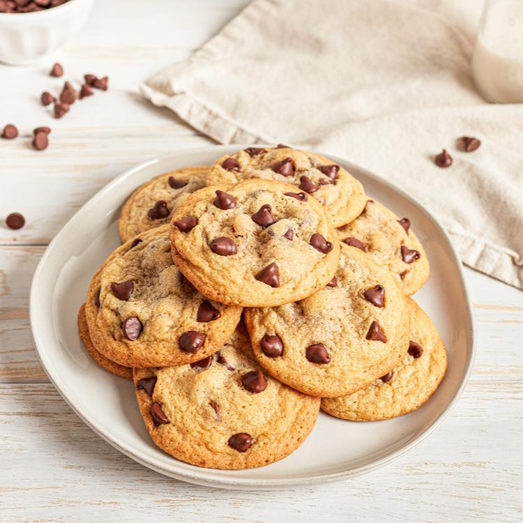

Home

Chocolate chip cookies are a delicious desert that's simple and easy to make. Its a favorite of kids and
grandmas the world over.
Ingredients
- 2 1/4 cups all-purpose flower
- 1 teaspoon baking soda
- 1 teaspoon salt
- 1 cup (2 sticks) butter, softened
- 3/4 cup granulated sugar
- 3/4 cup packed brown sugar
- 1 teaspoon vanilla extract
- 2 large eggs
- 2 cups (12-ounce package) chocolate chips
- 1 cup chopped nuts (optional)
Steps
- Preheat oven to 375 degrees
- Combine flour, baking soda and salt in small bowl. Beat butter, granulated sugar, brown sugar and
vanilla extract in large mixer bowl until creamy. Add eggs, one at a time, beating well after each
addition. Gradually beat in flour mixture. Stir in morsels and nuts. Drop by rounded tablespoon onto
ungreased baking sheets.
- Bake for 9 to 11 minutes or until golden brown. Cool on baking sheets for 2 minutes; remove to wire
racks to cool completely.